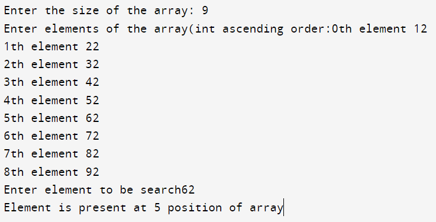

#include <stdio.h>
int recursiveBinarySearch(int arr[], int start, int end, int key)
{
int mid;
if(start <= end )
{ mid = (start + end)/2;
if(arr[mid] == key)
{
return mid+1;
}
else if(arr[mid] < key)
{
return recursiveBinarySearch(arr, mid+1, end, key);
}
else
{
return recursiveBinarySearch(arr, start, mid-1, key);
} }
return -1; }
int main() {
int arr[50] ;
int key,size,i,temp;
printf("Enter the size of the array: ");
scanf("%d",&size);
printf("Enter elements of the array(int ascending order:");
for ( i = 0; i < size; i++) {
printf("%dth element ",i);
scanf("%d",&arr[i]);}
printf("Enter element to be search");
scanf("%d",&key);
temp=recursiveBinarySearch(arr,0,size-1,key);
if (temp == -1)
printf("\nElement is not present in the array");
else
printf("\nElement is present at %d position of array", temp-1); }
Output:
